3x3 Tutorial
How to solve a Rubik’s cube
By Cole
With the LBL(layer by layer) method!
The first step to solving a Rubik’s cube is to make a white daisy.
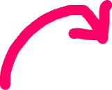
Like this!
Try put the white edges to the yellow centre.
All you have to do is...
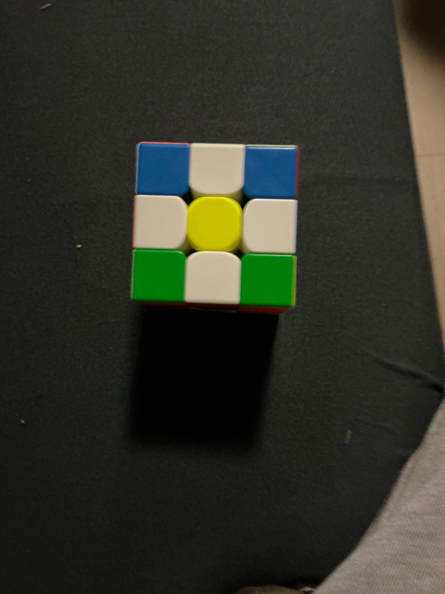
If the piece is in the right spot but flipped, you could use this algorithm to fix it.
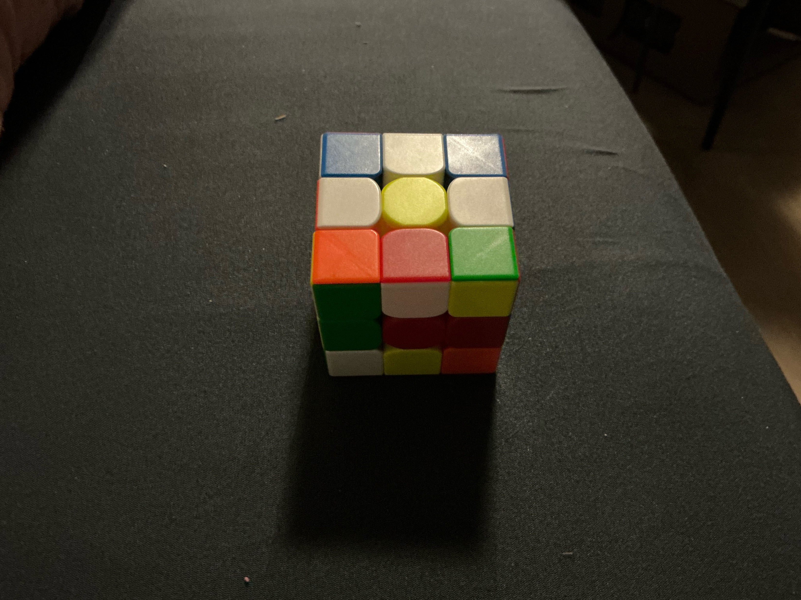
Making the Cross
After we finish the first step we will start making the cross.
If we want to make the cross we first need to find a white petal and there should be two colours on it. One should be white and the other shouldn’t be yellow. Once you find the white piece you should see the colour that is not white and match it to its centre then bring it down to the white side like this.
When you finish it should look like this:
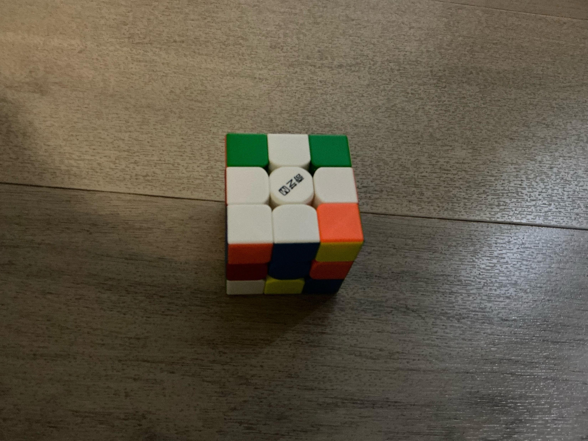
First Layer
If you followed all of that correctly your cross should be accomplished.
The first thing to do is to find a white corner on the top, after we look at what colours there are on the corner instead of white. For example my corner had blue, red, and white on it, then I would bring the corner between the blue and red centre then hold it like this.
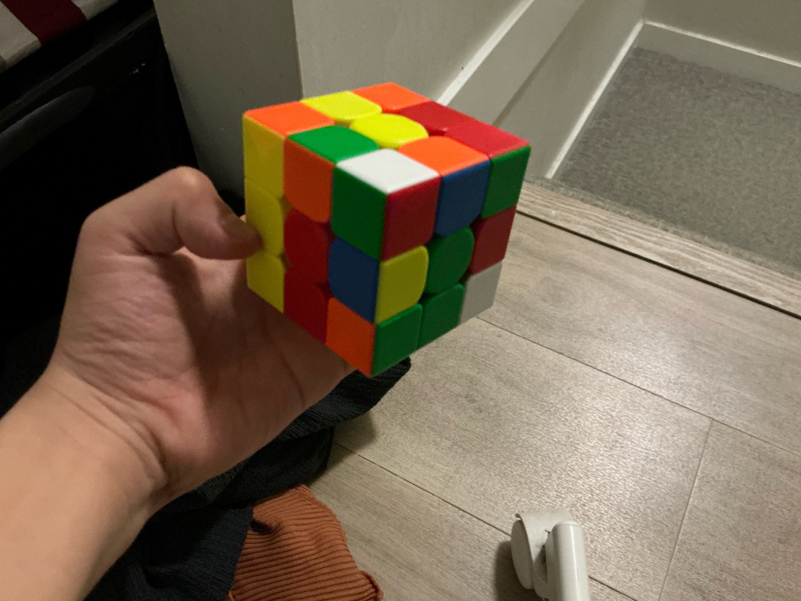
Right now you have to learn two new algorithms!
The first algorithm that you have to learn is this:
The second algorithm is this, and also the second algorithm is just the first algorithm left handed:
First Layer: 4 Cases
You could get 4 cases:
Case 1: White piece facing top. Put the white piece on the Right like this then do the 1st algorithm three times.
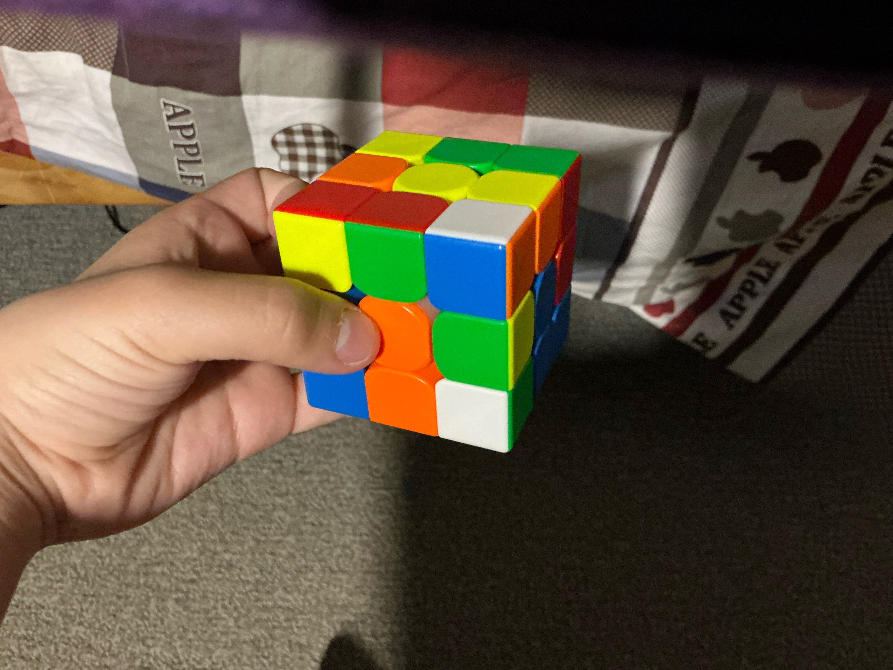
Case 2: White piece facing right. Put the white piece on the right then do the 1st algorithm 1 time.

Case 3: White piece facing left. Put the white piece on the left then do algorithm 2nd one time like this.
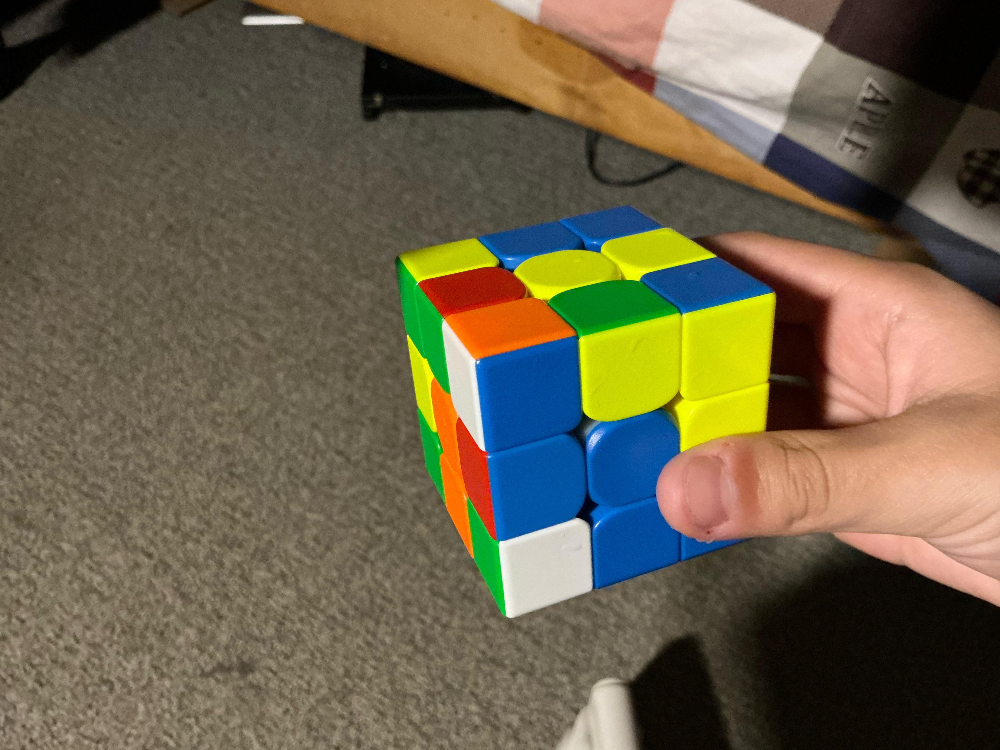
Case 4: If there are no corner piece on top then it must be stuck on the bottom, put it on the right then do 1st algorithm then do the rest like normal.
Second Layer
Right now we are going to do second layer. This is probably basically the hardest part but if you know algorithm one and algorithm two it will be really easy I promise.
This time there will be 2 cases for second layer and two algorithms for second layer but don’t get the algorithms mixed up because the algorithm are pretty similar.
For the first layer you had to find a white corner but for the second layer you have to find a edge that is not white or yellow on the top.
For example I found this piece, right? As you can see there is no yellow piece on it that means it’s correct.
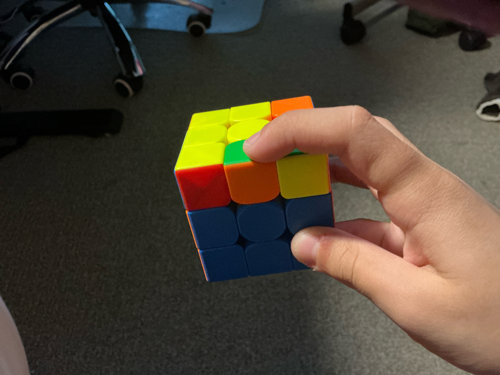
So now me see that this bottom piece is orange so I will connect the piece to its centre.
Now I see that it has to go to the left slot.
Second Layer Algorithms
So we want to put the piece in the left slot. This algorithm is basically taking out a second layer piece with the second algorithm then putting it back with the first algorithm. And that piece is solved!
The second case is a lot like the first case, but this time it’s right handed which is this: So this time we move the edge away then do the first algorithm then the second.
Second Layer: Special Cases
If you get this case where the edge is in the right place but flipped then replace it with a yellow edge and the edge should get taken out. Then you could do the rest normally.
There will be other cases that are similar so you could use the same way which is first taking it out then put it back in the correct spot.
Yellow Cross
The next thing we have to do is to make the yellow cross, and this time there would be four cases.
First case is where the yellow side is only a dot.
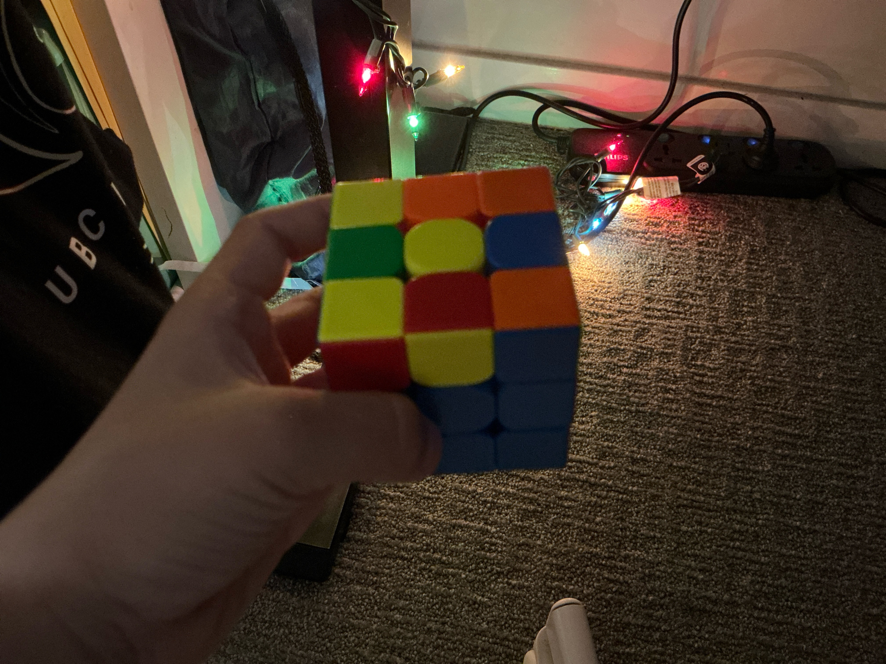
The second case is where there is a L shape on the yellow side.
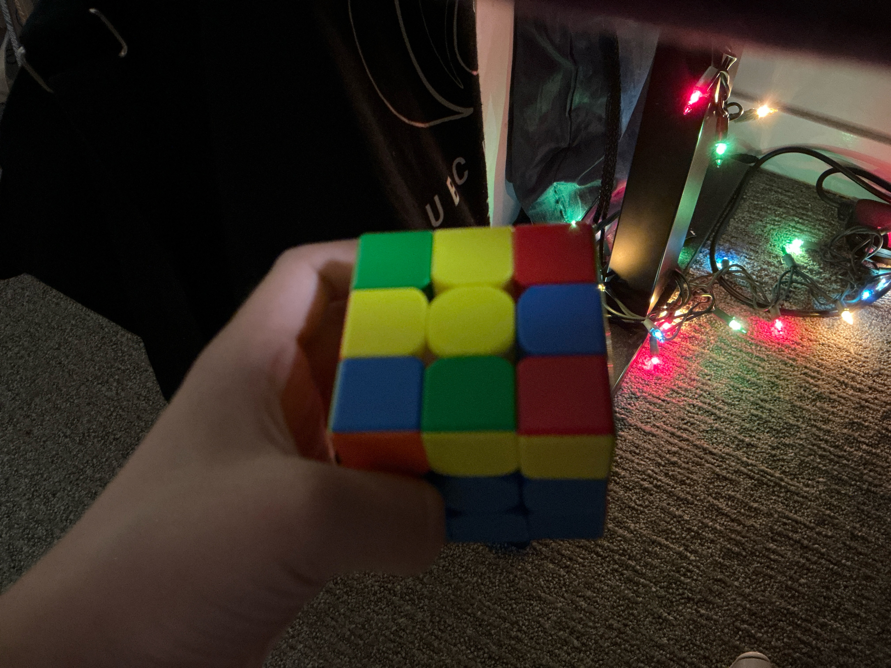
The third case is where there is a line on the yellow side.
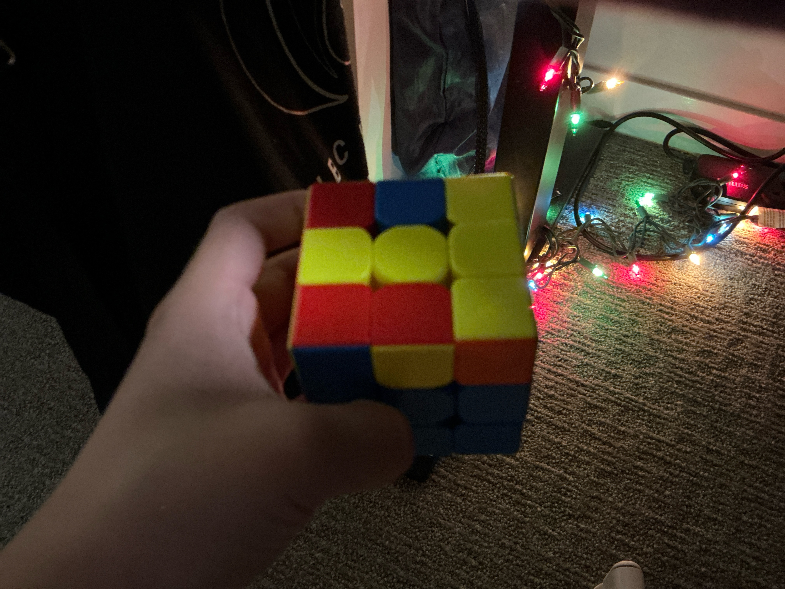
The fourth case is where there is a full cross already. You skipped this step!
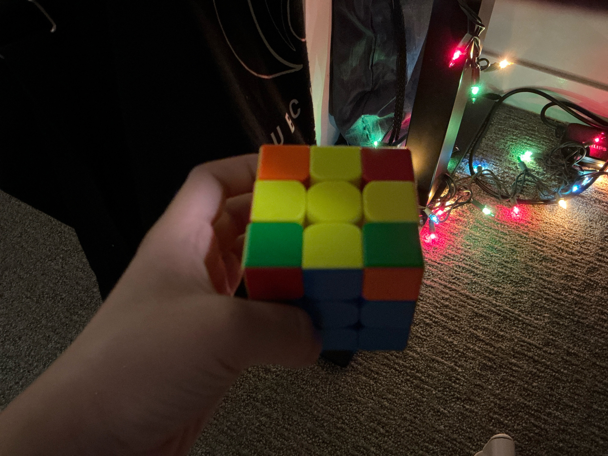
Yellow Cross Algorithms
You are gonna learn another algorithm that is super duper simple! So for line we are gonna hold it like this then do the algorithm.
Now you have to learn another algorithm which is just the opposite of algorithm one and this algorithm will solve the L case.
Yellow Cross: Dot Case
Now finally the dot case where there is a dot on the yellow side. So now we could hold it from any direction and do the algorithm and that will make a L so then we do the L algorithm.
Yay now we are only half way through! 🥳
Yellow Side Corners
So now we have to solve the yellow side.
Warning ⚠️ this is the hardest part and the most easy part to mess up and if you mess up you gotta restart. Pls don’t mess up 🙏
If I wanted to solve this corner I will do the first algorithm four times.
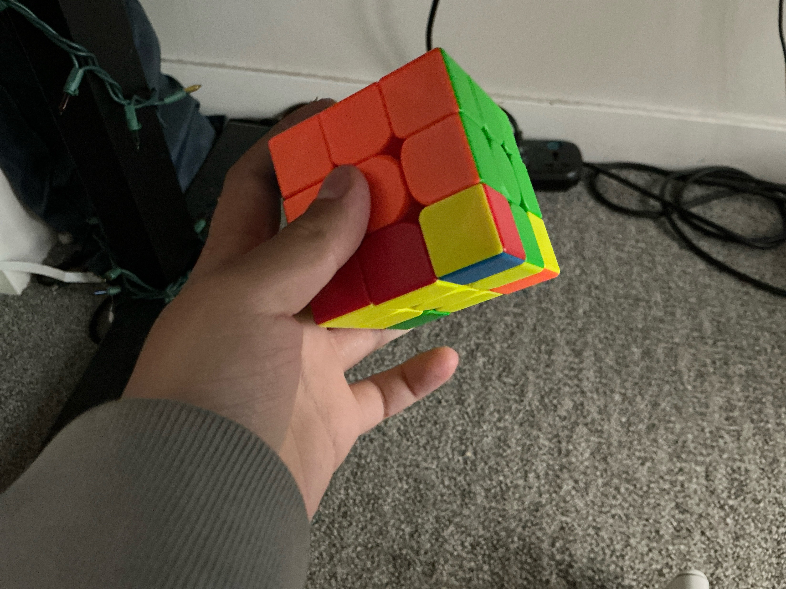
If I wanted to solve this corner I will do the first algorithm two times.
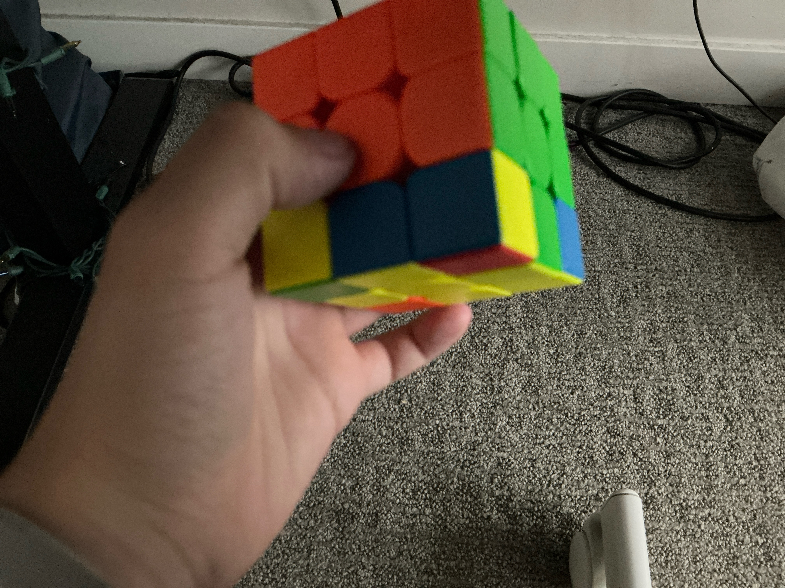
Yellow Side Video
I’m gonna show you most of it in video since it’s too hard to explain.
When you finish a piece and want to move on to the next piece then don’t do a rotation, instead we should turn the bottom layer to find your next piece like what video said.
The yellow side is kind of hard so it’s best to practice it a lot!
Last Layer Algorithms
Right now you have to learn two more algorithms. One has 11 moves and one has 9 moves.
This is the 9 move algorithm (Way 1).
This is the second way for the nine move algorithm. (This is the way I use).
This is the 11 move algorithm.
Headlights
In order to do the last layer you need to know what’s a headlight. A headlight is where there are two of the same coloured corners around a random edge.
This is a headlight:
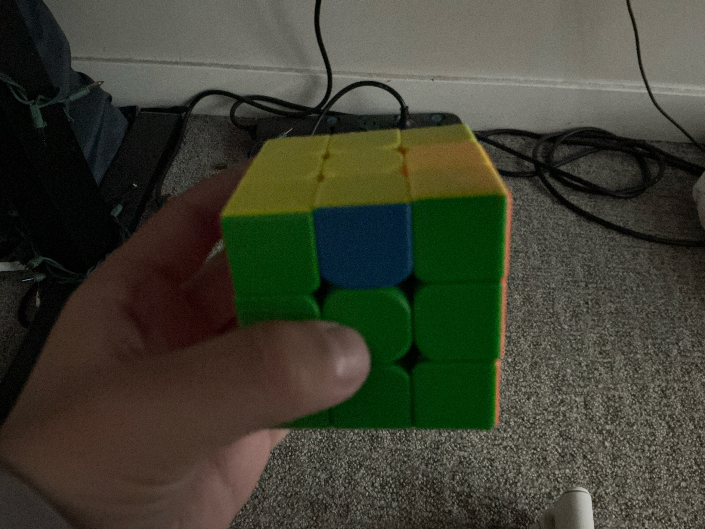
When this happens you could do the first nine move solution or the second 9 move solution so you could make it into all the corners solved for the last layer!
If you wanted to do the first way then you should put the headlights in front of you then do a rotation making the yellow side facing you then we do the algorithm.
If you wanted to do the second way then you should put the headlights on the right then rotate to make the white side facing you then we do the second nine move algorithm.
Last Layer Edges
There well be four cases after the corners are solved and if yours are not these four cases that might mean your cube is built wrong and you have to take out the pieces and put it back in the right place.
I know these four cases look different but you could use the same algorithm to solve it!
Case 1
Case 2
Case 3
Case 4
Edge Cases 1 & 2
This is what to do for case one. We basically just need to do the 1st algorithm two times but in the middle we need to do a rotation.
Same for case 2 but we rotate the other way, and we could start the algorithm from any direction.
Edge Cases 3 & 4
For case 3 there one side is solved and the others are not and the three pieces are turning counter clockwise. You put the solved side on the back and do 11 move algorithm once.
For case 4 there is also one solved side except this time the three not solved ones are clockwise.
Congratulations! Now you know how to solve a Rubik’s cube!!! 🥳🥳🥳
Thank you!
Hope you liked my tutorial! By Cole.
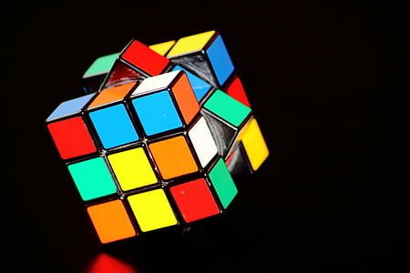